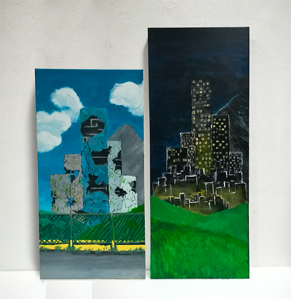

Pintura
Oficina de Artes e Tecnologia II
Projeto 1 - Apropriação/transformação
Neste primeiro trabalho da UC de Pintura, foi proposta a instalação que retratasse a temática de Apropriação/transformação. A minha peça dividiu-se em duas telas diferentes, cada uma representando a apropriação e a transformação de algo. Na tela da direita é possível observar-se a apropriação do homem sobre a natureza, enquanto que na tela da esquerda vê-se a transformação da natureza sobre as criações do homem.
Projeto 2 - O Erro
No projeto final desta UC, decidi estudar a área da Arte Conceptual. Para a realização desta peça, usei como meio de estudo o olho humano e as sensações que um olhar pode transmitir. Assim, sobre quatro placas de contraplacado, representei um olho com vários ramos à sua volta e fiz um inquérito a algumas pessoas sobre a peça. Como resultado final, todas responderam que se sentiam desconfortáveis na presença da peça.